Evening Standard — Insider brand & platform
Uncorking London-based luxury. Created the entire Insider brand from scratch — logo, typography, image processing technique, UX, and social system.
Building a brand from zero
Approached by senior editorial staff to create a brand new luxury lifestyle platform for the Evening Standard — Insider. Over six months I designed the entire brand: logo, UX and UI of the site, image processing technique, social system, and video furniture. I also collaborated with Harrods and Sky to build Insider's reputation with global clients through editorial partnerships.
- Designed entire site and brand identity from scratch
- Created image processing concept based on a content-leading-colour approach
- Created logo based on my own handwriting
- Directed video team's content creation using animated prototypes
- Designed social content look and feel, trained and supervised social team
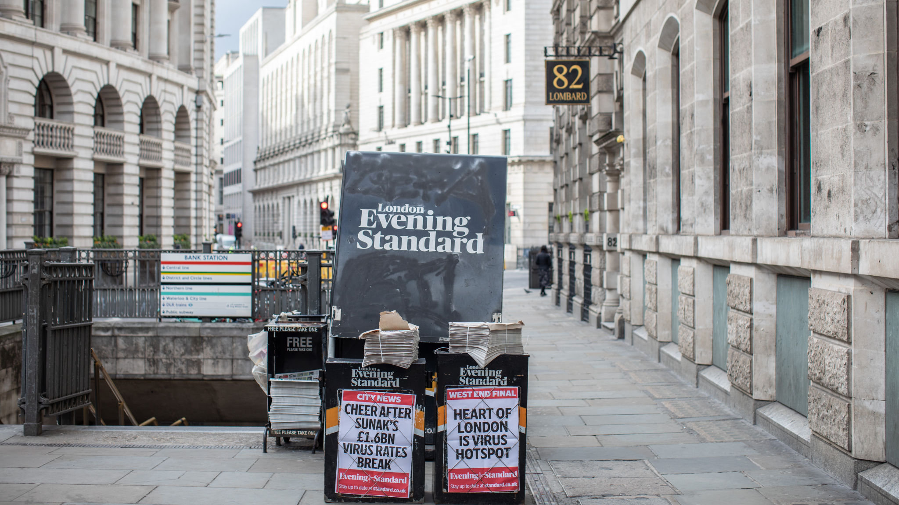
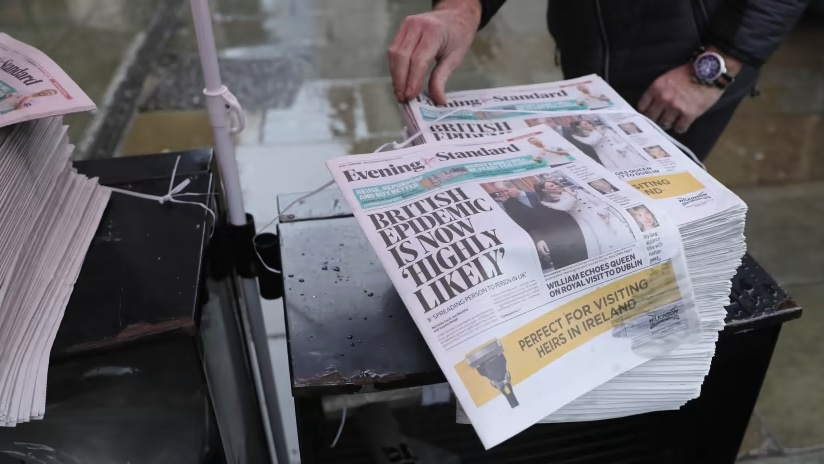
The logo
Insider was pitched as a "love letter to the world of luxury lifestyle." After quite a few experiments, we settled on a handwritten logo — a deliberate departure from the very constructed, formal world many associated with publishing.
After writing it out some 100+ times using different techniques and mediums, I landed on a variant I liked. After digitising it and making small tweaks, Insider's logo was ready.
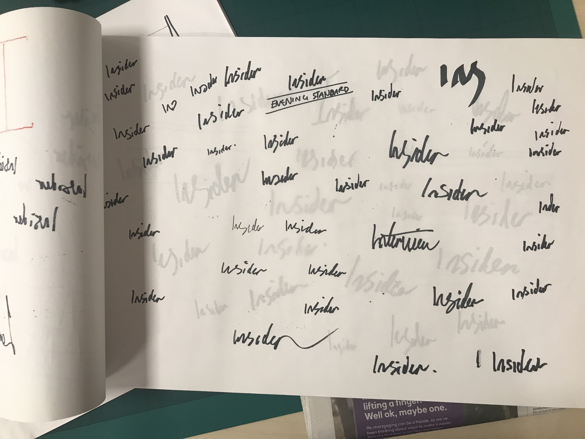
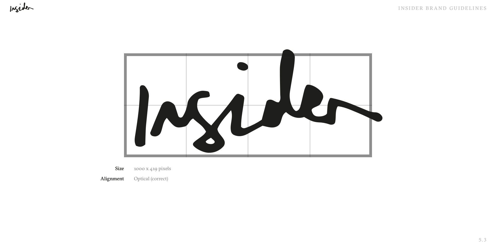
Colour — content-led
Adding colour to Insider was tricky. We didn't want a restrictive brand palette that could clash with beautiful imagery. Insider was image-first from the start — so it worked to develop a varying colour field technique to add flourish and accentuate imagery. Taking inspiration from Mondrian, Kandinsky, Turrell and Newman, these colour fields turned images into recognisable Insider "artwork."
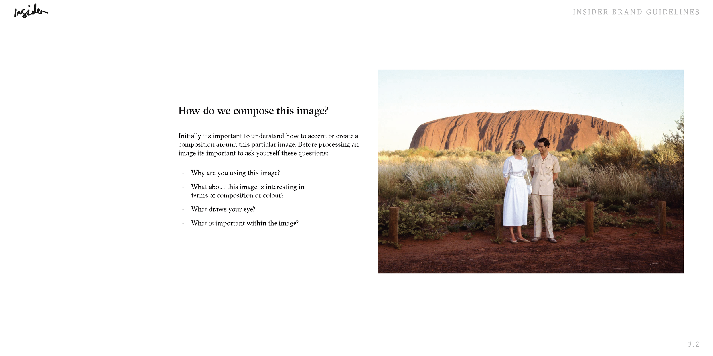
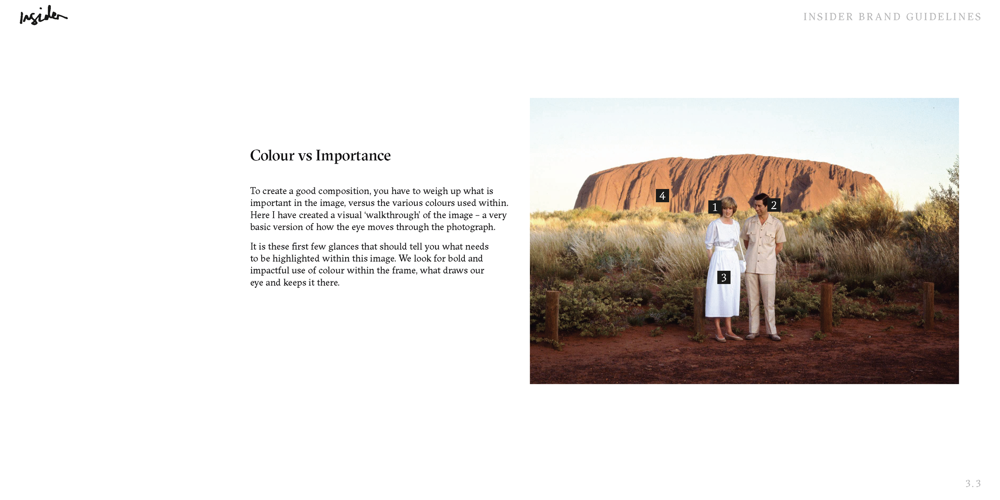
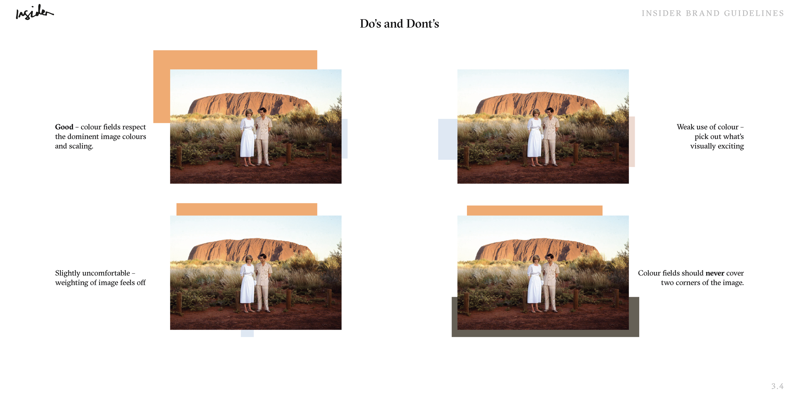
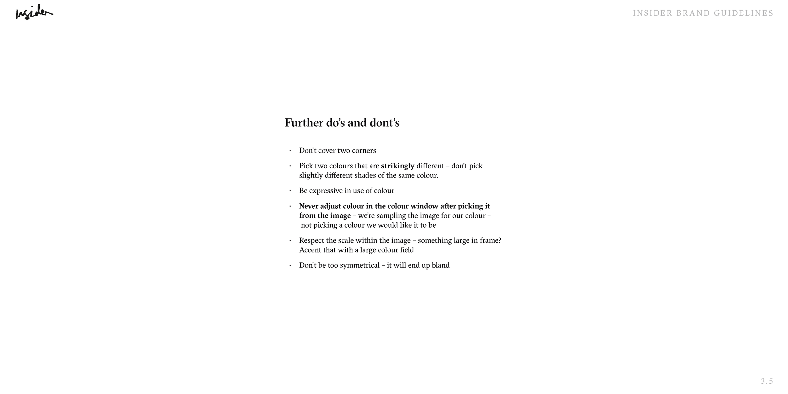
Typography
GT Sectra was chosen as the primary typeface — a contemporary serif with distinctive ink trap details that felt luxurious without being stiff. The pairing with a clean grotesque for captions and metadata created a hierarchy that worked beautifully across long-form editorial and short social cards alike.
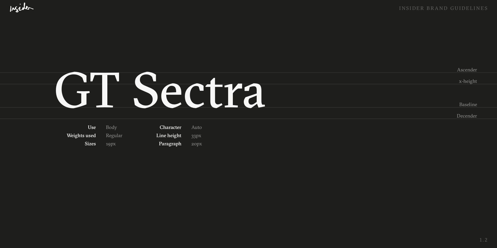
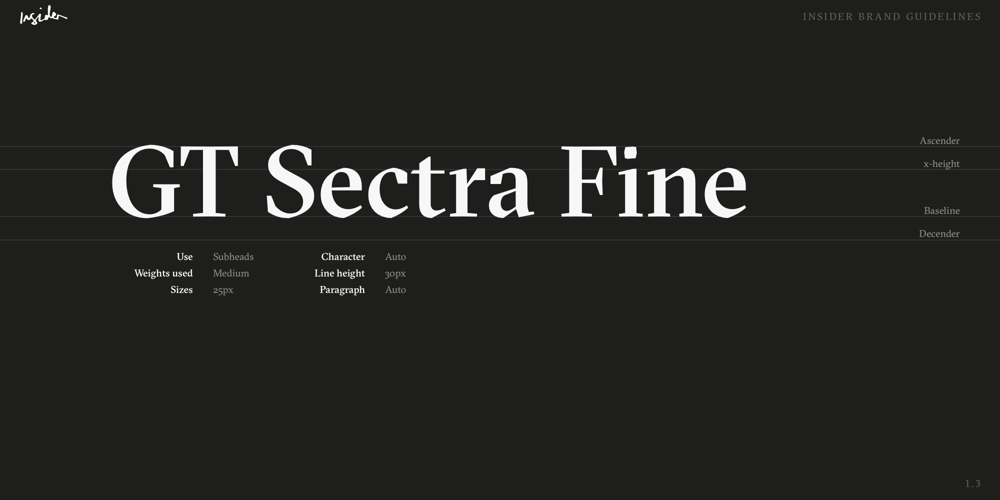
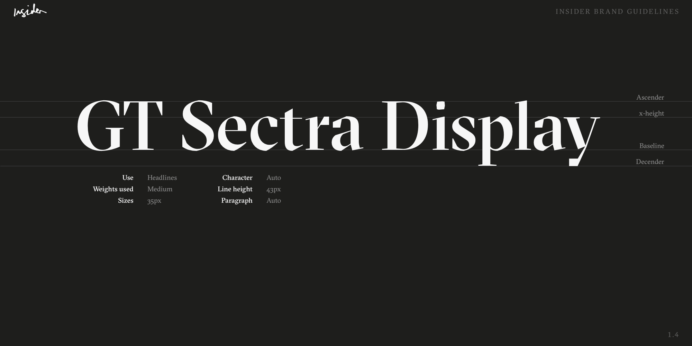
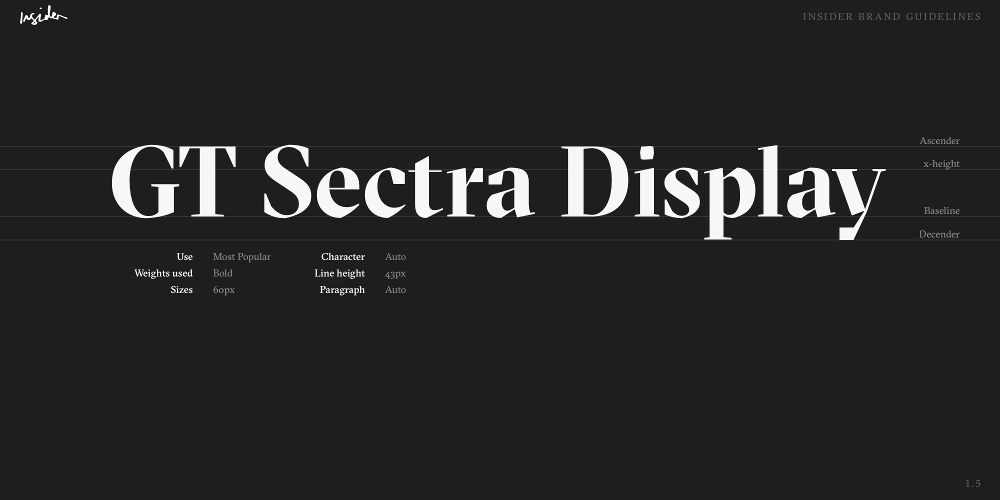
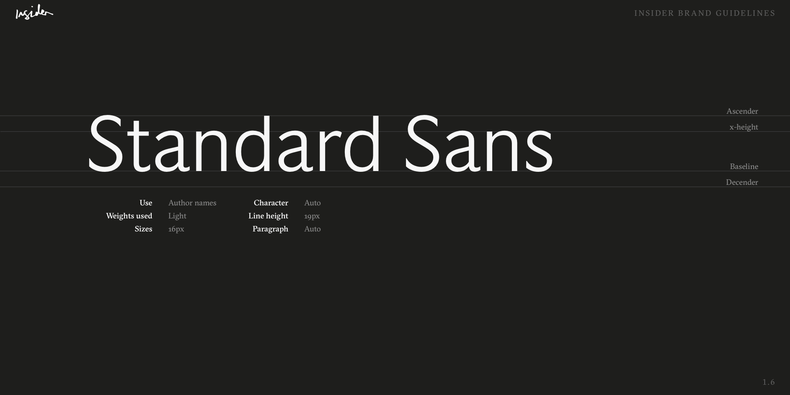
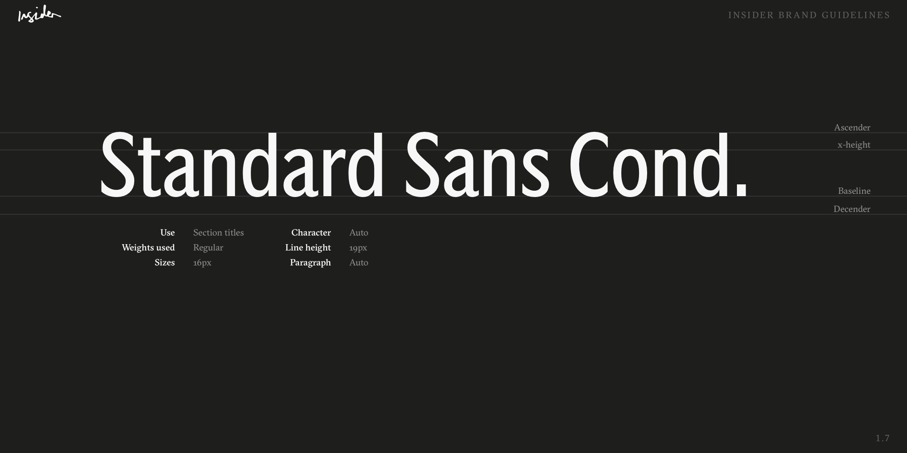
Insider brand guidelines — typography
Brand guidelines
The full brand guidelines documented every touchpoint — colour fields, typography pairings, image treatment rules, and social templates — to allow editorial and the social team to produce on-brand content independently without needing a designer in the loop for every piece.
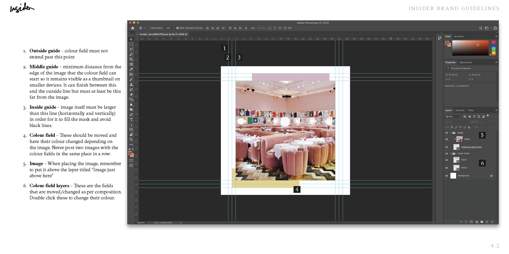
Insider brand guidelines — colour and image treatment
Social & mobile
Keen for Insider to be instantly recognisable at a feed level without checking the username, I created a Photoshop template using the colour field technique and trained the social team in using it. The site was designed mobile-first, bringing the colour field technique through as accents below images.
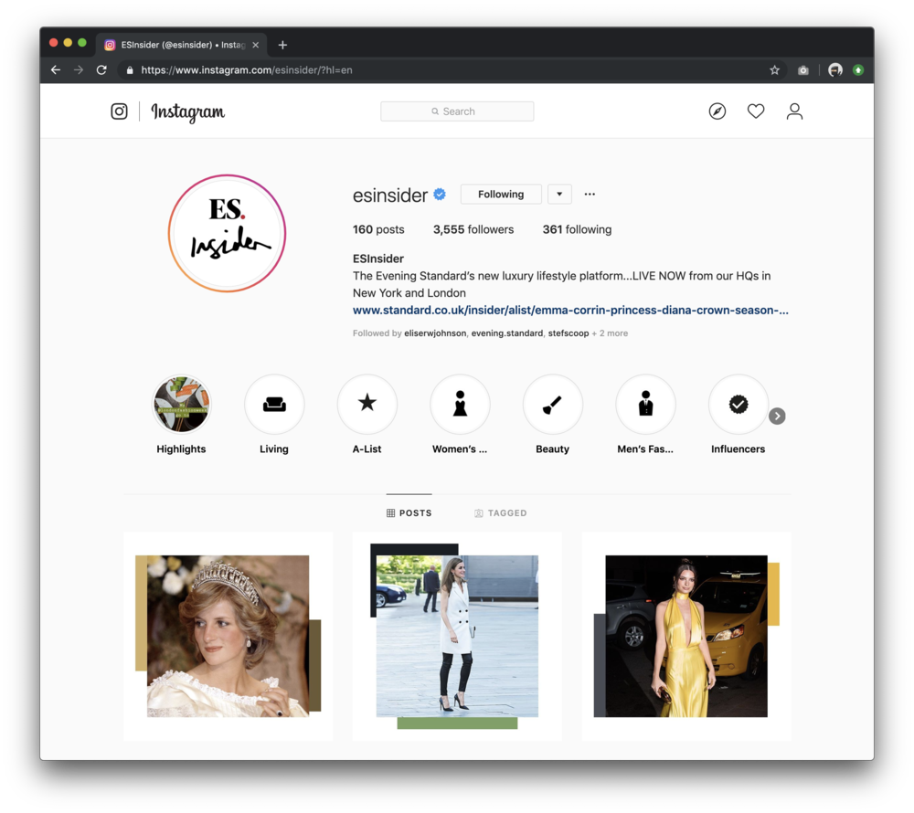
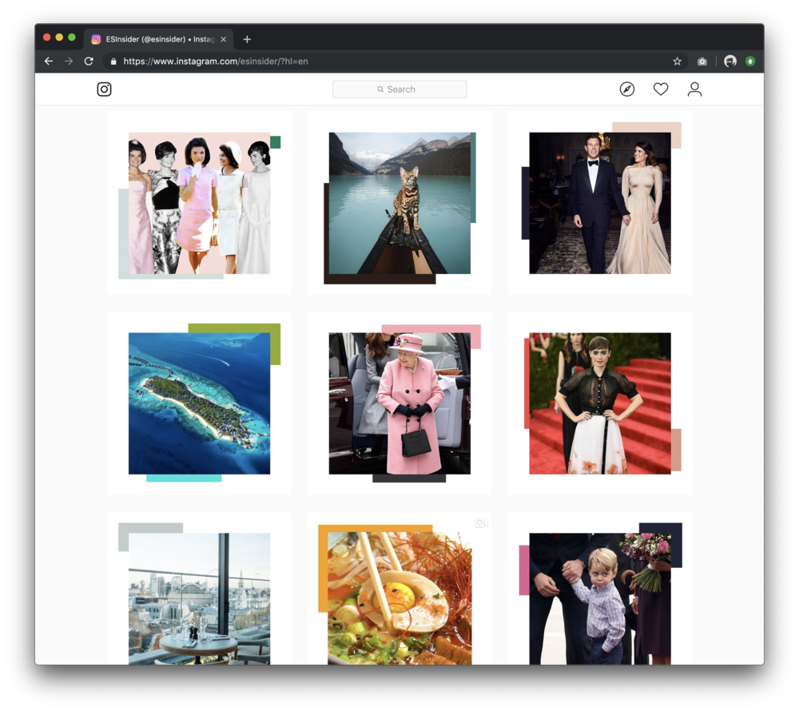
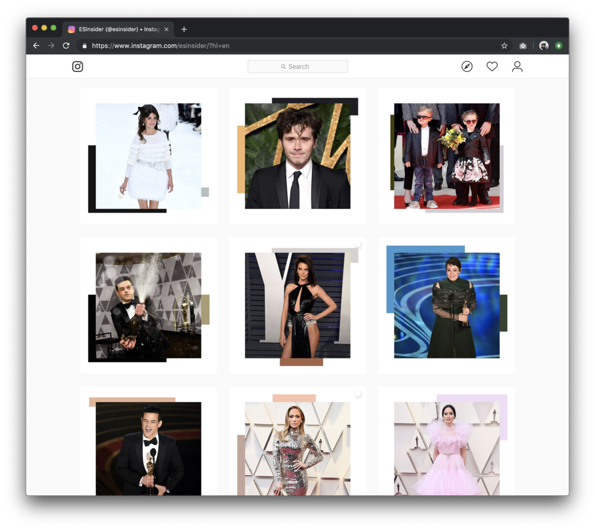